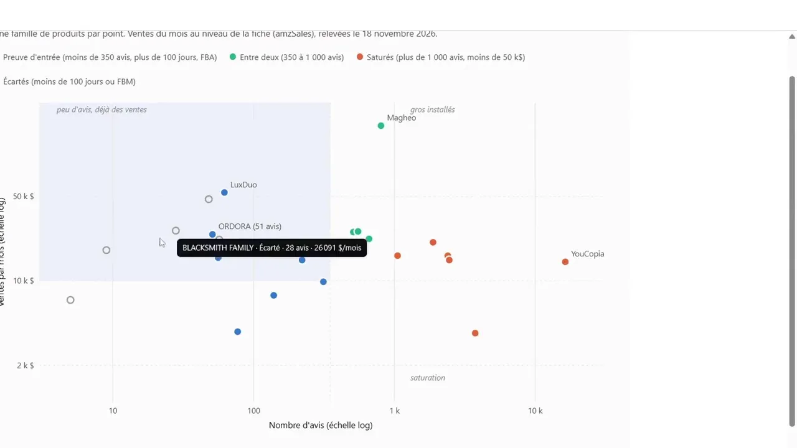

Le Sonar
Le Sonar va chercher là où ton outil ne regarde pas, croise ce qu'il trouve avec les chiffres d'Amazon, et te dit si ça vaut le coup d'y mettre ton argent.
C'est la méthode qui m'a servi à lancer ma propre marque de compléments.
Ouvre ton outil de recherche produit, peu importe lequel. Black Box, Xray, l'onglet de ton abonnement. Et coche ces quatre cases.
Tu la connais déjà, cette liste.
Tu l'as vue il y a trois mois. Le gars qui a pris son abonnement hier la voit aussi. Ces quatre filtres sont ceux de toutes les formations, donc tout le monde arrive sur la même page de résultats et se bat pour les trente mêmes produits.
Et c'est logique, hein. Il est branché sur Amazon, il lit Amazon, il te sort ce qui se vend sur Amazon.
Le souci, c'est ce qu'il ne peut pas voir. Les gens qui pestent contre un produit sur un forum, une mode qui monte ailleurs, un style que personne ne propose, des clients qui achètent faute de mieux. Rien de tout ça n'apparaît dans un filtre. Ça y apparaîtra le jour où quelqu'un d'autre l'aura exploité, c'est-à-dire trop tard pour toi.
Tant que tu pars d'Amazon, tu ne peux trouver que ce que les autres ont déjà trouvé. Ton outil est très bien. Il regarde juste par le même trou que tous les autres.
Et au bout de six mois, tu as passé des dizaines d'heures à chercher, pour rien.
Toujours les mêmes daubes en boucle. Et le jour où une idée a l'air bonne, tu commandes en même temps que dix vendeurs qui ont vu la même chose que toi. Ton stock arrive dans un rayon qui a triplé. À la fin, tu te dis qu'Amazon est saturé et que tu arrives trop tard.
Franchement ? Non.
Les quatre marchés que je t'ouvre en entier dans la formation, je ne les ai trouvés dans aucun filtre. L'un vient d'un bricoleur qui a imprimé sa solution un dimanche, l'autre d'un réseau d'images. Aucun n'était saturé, ils étaient juste ailleurs.
Ton outil sait très bien te dire si un marché vaut le coup. Il ne sait pas te dire où chercher.
Il ne voit que des chiffres de ventes. Donc on inverse l'ordre. On cherche dehors, et on vérifie sur Amazon.
Le Point
Avant de chercher quoi que ce soit, on cadre. Quatre questions sur ce que tu connais mieux que les autres, ton budget, et ton marché.
Qu'est-ce que tu connais mieux que la moyenne des gens ?
Je suis menuisier, c'est mon métier.
Combien tu peux mettre en tout sur un premier produit, stock et pub compris ?
8 000 €
Sur quel Amazon tu veux vendre ?
France
Tu vends déjà sur Amazon, ou pas encore ?
Pas encore
Menuisier, c'est ton meilleur atout. Les menuisiers bricolent eux-mêmes ce qu'ils ne trouvent pas, et ils en parlent entre eux. Je commence par lire L'Air du Bois et Copain des Copeaux.
Avec 8 000 €, vise des produits entre 53 et 71 €. Au-dessus, tu ne pourras pas commander assez de stock pour tenir.
On jugera tout sur Amazon.fr, ton propre rayon.
Prochaine étape, Le Ping.
Et tu pars de ce que tu connais déjà. Un infirmier, un grimpeur, un menuisier voient des problèmes que personne d'autre ne voit, et ça, personne ne peut te le copier.
Tu ressors avec un cadre. Où chercher, à quel prix, et ce que tu refuses d'avance.
Le Ping
Tu vas chercher là où ton outil ne regarde pas. N'importe quelle source où les gens parlent de ce qu'ils achètent, de ce qu'ils détestent, de ce qu'ils voudraient. Tu chasses un de ces cinq signaux.
C'est ça, le ping. Tu envoies le signal, et tu écoutes ce qui revient.
Un exemple réel, que tu suis en entier dans la formation. Un type poste le rangement qu'il a imprimé en 3D un dimanche, parce qu'il en avait marre de ses couvercles de casseroles. Vingt minutes plus tard, j'ai en face de moi un rayon Amazon dont les vingt premiers produits font plus de 180 000 $ par mois.
Aucun filtre ne m'aurait emmené là. Il n'y avait rien à filtrer, le signal n'était pas sur Amazon.
Dix à quinze pistes par soirée, et t'es le seul à les avoir.
Le Récif
Là, tu reviens sur Amazon, cette fois pour juger.
Le Récif passe chaque piste au crible. La taille du rayon, la marge qu'il reste une fois la pub payée, la place pour un nouveau, et ce qui te protégera quand d'autres arriveront.
Une condition qui tombe, et la piste s'arrête là. Tu passes à la suivante sans avoir dépensé un euro.
À quoi ressemble une idée validée. Exemple avec des chiffres inventés, survole un point.
Chiffres d'exemple
Trois marques récentes font déjà des ventes avec moins de 120 avis.
Le marché est défendable. Il manque trois barrières, et les deux moins chères tiennent dans 1 200 €.
Entrer coûte environ 4 100 €, premier stock compris.
S'ils sont dix à être entrés récemment, la porte est devenue un couloir. Tu peux entrer, et rien ne se refermera derrière toi. C'est là que la plupart des gens commandent quand même.
Et si elle tient, tu sais ce que ça te coûtera vraiment d'y entrer, et tu passes à la suite, le fournisseur.
Tu sais quoi commander, et pourquoi.
Celui des couvercles, que je viens de te montrer. Dix marques récentes y étaient déjà entrées avec presque aucun avis. Trop facile d'y entrer, donc rien ne protégerait ta place quand les suivants arriveraient.
Une méthode qui dit toujours oui ne te protège de rien. Tu suis les quatre marchés en entier dans la formation, celui-là compris.
Remboursé si tu ne sors aucun produit à vendre
Tu finis la soirée avec un seul produit en tête, et tu sais pourquoi les autres sont morts.
Les outils récoltent et calculent. Toi, tu choisis seulement ce que tu gardes au milieu.
Remboursé si tu ne sors aucun produit à vendre

Démo Sonar · sur YouTubeDe l'installation jusqu'à la décision finale, sur quatre vrais marchés. Tu vois les impasses aussi, pas seulement ce qui a marché.
/le-point cadre ta recherche, /le-ping va récolter les pistes, /le-recif juge le marché. Trois minutes pour les installer, et tu leur parles en français, sans écrire une ligne de code. Ils tournent sur tes propres accès, et refusent de démarrer sans données réelles.
Les seuils chiffrés exacts, et les cas qui arrêtent tout. Avec un prompt par étape, déjà testé sur les quatre analyses. Tu colles, tu remplaces ton mot-clé, tu lances.
Amazon change, les outils changent. Tu reçois les versions suivantes sans repayer.
Remboursé si tu ne sors aucun produit à vendre
Plus de six ans à vendre sur Amazon, 650 K$ de chiffre d'affaires l'an dernier, trois marques lancées. Invité au siège d'Amazon France et au premier événement Amazon Ads européen à Londres.
Cette méthode est récente. Elle n'existait pas il y a un an, parce qu'elle repose sur des outils d'IA qui viennent de sortir. Lire des milliers d'avis, de posts et de fiches en une soirée, personne ne pouvait le faire à la main.
C'est avec elle que je choisis mes prochains produits. Plusieurs de mes élèves en coaching ont déjà sorti des pistes qui tiennent, et sont en train de passer commande chez leurs fournisseurs.
Ce que tu apprends ici, je l'utilise pour mes propres lancements.
Cette formation t'apprend à choisir quoi vendre, et elle va jusqu'au verdict, juste avant que tu passes commande. Le reste du métier, elle ne le couvre pas.
Si tu as déjà une formation complète et que tu bloques toujours à l'étape 1, c'est normal aussi. Un programme qui couvre le métier de A à Z ne peut pas consacrer six heures à la seule recherche de niche. Celle-ci ne fait que ça.
Prix de prévente jusqu'au dimanche 29 novembre, 23 h 59.
199 € 299 €
Accès immédiat à ton espace, avec les trois outils. Remboursé si tu ne sors aucun produit à vendre.
10 places
399 €
Tu ne mets pas 8 000 € dans un stock sans un deuxième avis.
Au tarif de mon coaching, l'heure de visio seule vaut plus de 200 €.
Je prends la validation 399 €Remboursé si tu ne sors aucun produit à vendre.
Ce que je ne garantis pas, c'est une vente. Ce que je contrôle, c'est que la méthode te sorte des produits à évaluer, et c'est là-dessus que je m'engage.
Dix places sur la validation. Lire dix analyses et y répondre me prend deux heures par personne. Quand les dix sont prises, je ferme au lieu de bâcler.
Tu accèdes tout de suite à ton espace, avec les trois outils pour commencer à chercher. Les six modules vidéo et les quatre analyses le jeudi 10 décembre. C'est une prévente, d'où le prix.
Non, et tu n'écriras jamais une ligne de code. Tu colles une clé, tu te connectes, et tu poses tes questions en français. Le premier module montre chaque clic, sans accéléré.
L'IA, c'est la plomberie. Ce qui change ta recherche, c'est d'avoir plus de sources que les seules données Amazon. L'IA sert à traiter ce volume sans y passer la semaine, et c'est tout.
Elle ne décide rien non plus. Les trois outils refusent même de démarrer sans données réelles, parce qu'un outil qui invente des chiffres fait plus de dégâts que pas d'outil du tout.
Une cinquantaine d'euros par mois, pour les trois accès que la méthode demande. L'IA, un accès aux données Amazon, et un accès aux sources hors d'Amazon. Il te faut aussi un ordinateur.
Si tu me vois annoncer une fourchette plus large ailleurs, c'est qu'elle couvre toute ma panoplie de vendeur. Le Sonar n'a besoin que de ces trois-là.
On travaille dans l'onglet Code de l'application Claude, parce que c'est le seul endroit où tes résultats deviennent des fichiers et tes prompts des raccourcis. Le nom fait peur, le contenu non.
Non, et c'est même plus simple si tu ne vends pas encore. Toute la méthode tourne sur des données publiques, tu n'as besoin d'aucun compte vendeur.
Deux à trois heures pour une piste qui tient la route. Cinq minutes pour celles qui ne valent rien, et c'est la majorité. Les premières fois, compte plus.
Non.
Si c'est le A à Z que tu cherches et pas seulement la recherche de niche, j'ai monté l'Alliance FBA avec Seb de Liberté Digitale. Les deux se complètent, et tu n'as pas besoin des deux pour commencer.